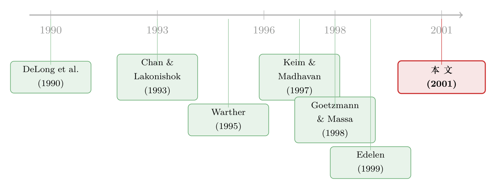

新闻里都说『基金一进场，股市就涨』——可这话只对了一天
本文读的是 Edelen & Warner (2001, Journal of Financial Economics)：他们用 1998–1999 年 每日 的美国股票型基金资金流数据，发现当天的资金流与当天的市场收益同向变动——净流入为正（负）的交易日，市场异常收益约 +0.25%（−0.25%）。更关键的是，借助日内（intraday）收益，他们论证了在交易日之内，主要是资金流推动了收益（即一个总量层面的价格冲击）；而资金流本身，则以滞后一天的方式追着收益跑。
1 一句人人都信、却从没被好好验过的话
打开任何一份财经报纸，你都能读到这样的句子：「散户大举申购，资金汹涌入市，推动大盘走高。」这话听上去天经地义——钱进来了，总得有人拿去买股票，买盘多了，价格自然涨。
可是，真要把它当成一个因果命题来对待，麻烦立刻就来了。
资金流（fund flow）和市场收益同向，至少有三种讲得通的解释。第一种，就是上面那句报纸语言：资金流推动了价格（价格冲击，price impact）。第二种恰好反过来——是市场涨了，投资者才追着申购，行话叫正反馈交易（positive feedback trading），钱是跟在收益后面跑的。第三种最阴险：资金流和收益谁也不推谁，它们只是同时对一条新到的消息做出了反应——好消息一来，股价立刻涨，乐观的投资者也顺手把钱投了进来，两者是一对「共同的孩子」，彼此之间并无血缘。
三种故事，观测到的相关性长得一模一样。这正是 Warther (1995) 当年留下的难题：他用月度数据发现，月度的总量资金流与市场收益高度相关（异常流的回归 R² 高达 55%），可一个月这么长的窗口里，因果方向早就被搅成了一锅粥——你根本分不清是钱推了价、价勾了钱，还是消息同时点了两把火。
于是，一个自然的问题是：有没有办法，把这三种故事拆开？
Edelen 和 Warner 的答案是：换一把更细的尺子——用每日、甚至日内的数据。频率一旦提上去，时间的先后顺序就变得可见，因果的方向也就有了缝隙可钻。
2 一份「够新鲜」的资金流数据
要做高频分析，先得有高频数据。这恰恰是过去做不到的地方——共同基金的资金流，传统上只能按月拿到。
本文用的是一家叫 Trim Tabs (TT) 的金融服务公司提供的 每日 净流数据，覆盖 424 只美国股票型基金（约占 ICI 口径下全美股票基金数目的 16.5%、净资产的 20%），样本期为 1998 年 2 月 2 日 至 1999 年 6 月 30 日，共 343 个交易日。资金流被定义为「当天资产管理规模的百分比变化，减去当天净值（NAV）的百分比变化」——也就是把价格涨跌的影响剔掉，剩下纯粹由申购、赎回带来的那部分资金净流入。
这里有一个容易被忽略、却被作者反复强调的细节：数据的时效性（timeliness）。一只基金当天的真实资金流，连基金经理自己在收盘前都未必精确知道——申赎指令由转移代理人（transfer agent）在收盘后批量处理，通宵跑完，第二天早上 7:30–8 点才反馈给基金。TT 再在第二天上午汇总、下午发给订户。所以从「资金流发生」到「它成为公开信息」，最多滞后一天。 这个时间结构，后面会成为整篇论文识别因果的支点。
先看几个基本量级（Table 1）。日均资金流是 1.6 个基点（0.016%），标准差 13.4 个基点；同期日均市场收益 6.2 个基点。TT 的资产基数从 4500 亿涨到 6000 亿美元。一个一倍标准差的资金流冲击（13.4 bp），对应约 8.04 亿美元——听上去不小，但比起 NYSE 一天 290 亿美元的成交额，这只是九牛一毛。
记住这个对比：资金流的绝对体量很小。 它后面会让我们对「价格冲击」的解读多一分谨慎。
3 第一步：先把『资金流』这条序列摸清楚
直接拿资金流去回归收益，会出岔子。因为资金流本身是高度可预测的——它和自己的过去相关，更和滞后的收益强相关。如果不先把这些可预测的部分剥掉，回归就会把「本该如此」的成分错当成「冲击」。
所以作者的第一步，是把资金流拆成预期（expected）和非预期（unexpected）两块。做法是先跑一个「资金流对滞后收益、滞后资金流」的时间序列回归（Table 2）。这一步的发现本身就很有意思：
- 滞后一天的收益，系数
0.073，t = 16。这是全表最强的一项——一个一倍标准差的收益冲击，会在第二天带来将近三分之二个标准差的资金流冲击。 - 当天的收益也和资金流正相关，但弱得多：系数
0.017，t = 4.1。 - 光是滞后收益，就能解释日度资金流变动的近一半（
48%）；再加上滞后资金流，R²升到53.1%。
换句话说，资金流追着昨天的收益跑，这件事非常确凿。钱是「慢半拍」的——这与前面那个「申赎要到收盘后才结算」的时效结构完全吻合：今天的行情，要等到明天才变成钱进场。
这里其实已经埋下了对「报纸叙事」的第一记反驳：如果资金流主要是跟在收益后面，那「资金流推动市场」的因果链，至少在跨日的层面上是反的。
4 第二步：把『非预期资金流』喂给收益
接着，把当天的收益回过头来，对当天及滞后的非预期资金流（实际值减预期值）做回归（Table 3）。结果干净得出奇：
收益只和当天的、非预期的资金流相关。系数 2.73，t = 4.1。也就是说，一个一倍标准差的资金流冲击（13.4 bp），对应当天约 37 个基点的异常市场收益。 而预期资金流（滞后收益与滞后资金流的线性组合）与收益毫无关系——这正是我们想要的：可预测的钱不带来收益惊喜，只有「意料之外」的钱才与价格同动。
更妙的是滞后项的「沉默」。非预期资金流在滞后一天、两天乃至更高阶上，对收益都没有系统性的显著关系。这一点至关重要，因为它排除了一个竞争假说——临时价格压力（temporary price pressure）。如果资金流只是短暂地把价格顶上去、随后又反转回落，我们应当看到「今天的高资金流 → 明天的低收益」这种负相关。但数据里看不到这种反转的痕迹。
为了让量级更直观，作者在 Table 4 里换了个说法：净流入为正的交易日，平均流入约 5 亿美元（约占 NYSE 成交额的 2%），对应异常市场收益 +0.25%（t = 2.73）；净流出为负的交易日，对应 −0.25%（t = −2.61）。
然后是这篇论文最漂亮的一处对照。作者把这个总量（aggregate）层面的关联，和文献里个股（individual stock）层面的机构交易价格冲击放在一起比——Chan & Lakonishok (1993, 1995)、Keim & Madhavan (1997)、Jones & Lipson (1999) 估出的单个机构买卖对个股价格的冲击，通常落在 0.1% 到 0.3% 区间。而这里总量层面的 0.25%，竟然和微观层面几乎一个量级。 一个由无数基金申赎汇集而成的「宏观」价格效应，和华尔街交易台上某一笔大单砸出来的「微观」效应，量级上对得上——这是一个相当有冲击力的发现。
5 但真正关键的一步：用日内数据钉死因果
到这里，我们有了一个可靠的同期正相关。可你大概已经听见 Warther 的幽灵在耳边低语：相关不是因果。这个 0.25%，到底是钱推了价，还是别的什么？
作者承认：单看日度数据，依然无法定论。于是反转出现在「日内」。
第 4 节请来了更细的武器：从 Futures Industry Institute 拿到 S&P 500 现货指数的逐笔（tick）数据，构造出开盘到收盘（open-to-close）、收盘到开盘（close-to-open，即隔夜）、以及日内（如每小时）的收益。逻辑是这样的：
资金流要到当天收盘后才结算、第二天才公开。所以——
- 如果是反馈交易（收益勾着钱走），那么钱应当对已经实现的、看得见的收益做反应。而对一只基金的投资者来说，今天能看见的收益，主要是白天（open-to-close）的行情。
- 如果是价格冲击（钱推着价走），那么资金流相关的买盘发生在交易日之内，应当与当天日内的收益同动。
把同期关系拆进一天的不同时段，两种故事就有了不同的「指纹」。论文的结论是：在交易日之内，主导关系是收益对资金流（及资金流引发的交易）做出反应——这指向一个总量层面的价格冲击；而资金流追着收益跑的那一半，主要发生在隔了一天的层面上，是一种慢半拍的反馈（或者说，是资金流与收益对共同信息的、有时间差的反应）。
一句话总结这场拆解：日内是「价推钱不动、钱难追价」，跨日才是「钱追价」。 当天那 0.25%，更像是真的价格冲击。
6 那报纸说错了吗？——一个被刻意压住的结论
如果你以为作者就此要为「基金推动股市」摇旗，那就小看了他们的克制。
恰恰相反。整篇论文最冷静的一句话是：日度资金流只能解释市场收益变动的约 3%（Table 3 的 R² 仅约 3%）。这和 Warther (1995) 报告的月度 55% 形成了刺眼的反差。作者的解读是：那个高得吓人的月度相关，并非因为资金流驱动了收益，而主要来自「资金流滞后收益一天」这件事在月度上的累积——把滞后收益放进资金流的回归（Table 2），日度 R² 同样能升到约 50%，与月度对得上。
所以本文的立场是双重的，别读串了：在交易日之内，有一个统计上可靠、量级上可观的价格冲击；但在「资金流是否驱动了股市整体水平」这个大问题上，每日相关如此之低，说明资金流对市场水平的影响其实很有限。 报纸那句话，对了一个「日内冲击」的小尾巴，却错把它当成了整片天空。
那么，会不会积少成多？作者老实地做了一个「粗算」：假设市场无法完全预测长期资金流，每日非预期资金流平均 0.5 个基点，五年（1250 个交易日）按 Table 3 的系数 2.73 累积，理论上能堆出 17.1% 的累计收益。这个数字不小。但他们同样老实地承认：本文样本太短（1998–1999），无法真正研究持续资金流冲击的长期累积效应，也无从回答「90 年代股价的一路狂飙里，基金资金流扮演了什么角色」。长期效应，悬而未决。
这种「我证明了一个干净的短期效应，但坚决不把它外推成大叙事」的分寸感，是这篇论文气质里最值得学的部分。
7 一个被顺手解决的副产品：交易成本被高估了
论文还有一处常被忽略、却很要紧的推论。
如果一家机构的交易，部分是在响应资金流，而资金流又有一个会影响市场整体的共同成分，那么这只被交易的股票当天的收益里，就掺进了一块与该机构自身交易无关的市场因素。于是，用「成交当天的个股收益」去衡量这笔交易的成本，会系统性地高估真实的交易成本——你把巧合的市场波动，算到了交易员头上。要剔除这个偏差，就得有精确到分钟的成交时点和报价级数据。
这条推论，把一个看似宏观的资金流议题，悄悄接回了机构交易成本测度的微观文献。也正因如此，本文常被归到「机构交易价格冲击」这条线里，而不只是「基金资金流」那条线。
8 文献脉络
这条研究有两条根，在本文交汇。
一条是机构交易的微观价格冲击。Chan & Lakonishok (1993, 1995) 用机构的成交记录，发现机构买卖对个股价格既有永久、也有临时的日内冲击；Keim & Madhavan (1997)、Jones & Lipson (1999) 沿着交易成本与执行的方向继续打磨。它们的共同结论是：机构交易会动价格——但都停在个股层面。（关于机构交易如何在个股层面留下「脚印」，可参见《谁的单子在悄悄推着股价走？》。）
另一条是总量资金流与市场收益。DeLong, Shleifer, Summers & Waldman (1990) 在理论上论证了正反馈交易如何放大波动；Warther (1995) 用月度数据点出了那个高相关、却无法定因果的难题；Edelen (1999) 揭示了资金流会逼出基金的交易、并损害其业绩；Goetzmann & Massa (1998) 第一次用（少数几只）指数基金的日度数据触碰了这个问题。

本文站在两条线的交点上：它把「微观机构交易」的价格冲击视角，搬到了「总量资金流」的宏观层面，并用日度 + 日内的高频数据，第一次较为干净地把价格冲击、反馈交易、与共同信息这三种解释分了开来。它也直接呼应了 Greene & Hodges (2000) 对每日资金流稀释效应的关注——后者指出 TT 数据中部分基金未能完全反映当日活动，而作者论证这只会加强本文「资金流交易有总量价格冲击」的主结论。（关于每日资金流如何把成本摊给「不交易的人」，可参见《免费的流动性，账单却寄给了「不交易的人」》。）
二十多年后回看，这条脉络一路长到了今天的「基金流动性与市场脆弱性」议题——当基金持有的资产本身难以脱手时，资金流的价格冲击会不会反过来制造系统性的脆弱？（这正是《基金越难脱手，它手里的债券越「抖」》与《同一个发行人的两只债券，戳破了「火线甩卖」的幻觉》所追问的方向。）
9 评论与延伸（Q&A + 研究方向）
(a) 几个可能的疑问
Q：把资金流拆成「预期/非预期」，会不会是用滞后收益去构造预期、再用非预期解释收益，绕了一圈自我循环？
不是循环，而恰恰是为了切断循环。预期资金流是滞后收益与滞后资金流的函数（都是当天之前就确定的信息），它与当天收益不相关（Table 3 里系数不显著）；唯有「意料之外」的那部分才与当天收益同动。如果不剥离，资金流里那块「追着昨天收益跑」的成分，会污染同期回归。这一步是在净化自变量，而非制造关联。
Q：每日相关只有 3%，那这个『价格冲击』是不是小到没有现实意义？
要分清两个问题。论文明确区分了「资金流对市场水平的解释力」（很弱，3%）和「资金流是否存在一个因果性的日内冲击」（存在，且量级与个股机构交易相当）。前者说明资金流不是市场涨跌的主因；后者对交易成本测度和长期累积效应有意义。低
R²不等于零效应——它只是说，决定每日大盘的，绝大部分是别的东西。
Q：这个总量冲击，会不会其实就是『共同信息』——好消息同时点燃了收益和资金流，根本没有因果？
这正是作者要钉死的竞争假说，也是日内数据的用武之地。共同信息假说预测收益与资金流应同时反应，且反馈应对应白天已实现的收益（投资者看到行情才申购）。而日内证据显示，交易日之内主导的是「收益对资金流反应」，反馈则主要落在跨日。这与「纯共同信息、无因果」的图景不一致。当然，作者措辞谨慎——他们说的是「在进一步检验的支持下」才把同期关系解读为价格冲击。
Q：TT 只有 424 只基金、样本才一年半，结论靠得住吗？
这是最实在的软肋，作者自己也反复声明。样本短（1998–1999）、且恰逢一段特殊行情；TT 与 ICI 全口径月度资金流的相关是 0.72，有代表性但非全样本。作者补充用 1994–1998 的半周（semi-weekly）数据做过检验，定性结论一致（未报告以省篇幅）。但「长期累积效应」这种需要长样本的问题，本文主动承认无法回答。
Q：为什么收益领先资金流，而不是资金流领先收益？这不正好说明是反馈交易吗？
跨日层面确实是「收益领先资金流」（滞后一天收益对资金流的系数 0.073，
t = 16），这部分支持反馈/慢反应。但本文的核心主张落在日内：在一天之内，主导方向反过来，是资金流引发的交易在推动收益。两个层面、两种方向，并不矛盾——钱在跨日上追价，价在日内上被钱推。
Q：和 Warther (1995) 到底是『推翻』还是『补充』？
是重新解释，而非推翻。Warther 的月度高相关是真的，但本文论证它并非源于「资金流驱动收益」，而主要源于「资金流滞后收益一天」在低频上的累积。把滞后收益纳入后，日度
R²也能升到约 50%，与月度对齐。所以两者数据都对，分歧在因果故事。
(b) 几个可能的研究问题与提案
1）把这套日内识别搬到公司债基金的资金流上。 【经济故事】股票市场体量巨大、流动性极好，所以总量资金流的价格冲击被稀释到只剩日内的小尾巴。但公司债市场流动性差得多、做市商库存约束更紧——同样规模的资金流冲击，价格弹性可能大得多，甚至构成系统性脆弱的来源。 【可行性】中。需要每日（或更高频）的债券基金资金流（如 EPFR、ICI 日频估计）配合 TRACE 的债券成交与收益。识别仍可沿用本文的「预期/非预期」分解 + 日内时段对照。难点在债券日内价格的噪声与非同步交易，需要更细致的流动性控制。
2）外资资金流 vs. 本土资金流，谁的价格冲击更陡？ 【经济故事】外资常被指为「热钱」与不稳定之源。若外资申赎对应的交易更集中、信息含量更低，其总量价格冲击的形态（冲击大小、是否反转）应当与本土资金流不同。这能给「外资是否加剧波动」的老争论提供一个微观证据。 【可行性】中。需要按投资者来源拆分的高频基金资金流，这在韩国、台湾等有逐笔投资者标签的市场较易获得；识别可复制本文的日内框架，比较两类资金流的同期与滞后结构。
3）资金流价格冲击的「状态依赖」：危机时是否非线性放大？ 【经济故事】本文样本恰好不含大危机。一个自然的猜想是，当做市能力枯竭、流动性蒸发时，单位资金流的价格冲击会急剧放大——即冲击系数随市场流动性状态变化。这把静态的 2.73 变成一条会「看天」的曲线。 【可行性】高。把样本拉长到含 2008、2020，按市场流动性（如 Amihud 非流动性、VIX）分状态估计交互项即可。数据可得，识别清晰，难点只在样本与状态划分的稳健性。
4）重估机构交易成本里那块「市场因素」偏差到底有多大。 【经济故事】本文指出，用成交当天个股收益衡量交易成本会高估真实成本，因为掺了与资金流共同的市场成分。但「高估多少」一直没被量化。把这块偏差算出来，对评价机构（尤其指数基金、ETF）的真实执行成本有直接意义。 【可行性】中高。需要个股级机构成交时点 + 总量资金流，用本文逻辑构造「剔除资金流共同成分」前后的成本差。Ancerno/transaction-level 数据可支撑。
5）资金流公开信息的「时效」本身如何被定价？ 【经济故事】本文反复强调资金流要滞后一天才公开。那么，当 TT 这类数据真正发布的那个下午，市场是否会对「昨日非预期资金流」再做一次反应？如果资金流有信息含量，发布事件本身应是一个可观测的价格反应窗口。 【可行性】中。需要精确的数据发布时戳 + 日内收益做事件研究。难点是发布时点的获取与样本量，但识别非常干净。
10 我的判断
这是一篇「方法先于宏大叙事」的范本。它的贡献不在于喊出「基金推动股市」，而恰恰在于用更高频的数据，把一个被月度相关搅浑的因果问题拆得清清楚楚，并诚实地划定了结论的边界：日内有真实的价格冲击，量级与个股机构交易相当；但资金流对市场整体水平的解释力很弱（3%），长期累积效应存而不论。这种「证明小、不吹大」的克制，今天读来依然稀缺。
要说对识别的担忧，最大的两点都被作者自己点破了：一是样本太短、太特殊（1998–1999 一年半），任何把同期系数外推到长期、外推到危机状态的尝试都很危险；二是日内识别依赖资金流的时效结构（收盘后结算、次日公开）这一制度性假设，一旦某些基金或某些时段的时效不同（Greene & Hodges 就指出过数据不完全反映当日活动），日内的「价推钱」与跨日的「钱追价」之间的边界就可能模糊。本文论证这种不完全只会强化主结论，但这终究是一个需要更干净时戳数据去重做的环节。
我最想看到的后续，是把这套日内框架搬到流动性更差、做市更脆弱的市场——公司债、新兴市场、危机时段——去检验那个被本文压住的猜想：当价格弹性不再被海量流动性稀释时，资金流的总量价格冲击，会不会从一个「日内的小尾巴」，长成一个真正的系统性风险？这正是从 Edelen-Warner 通向今日「基金—流动性—脆弱性」议题的那条暗线。
参考文献
- Chan, L., Lakonishok, J. (1993). Institutional trades and intraday stock price behavior. Journal of Financial Economics 33, 173–200.
- Chan, L., Lakonishok, J. (1995). The behavior of stock prices around institutional trades. Journal of Finance 50, 1147–1174.
- DeLong, J., Shleifer, A., Summers, L., Waldman, R. (1990). Positive feedback investment strategies and destabilizing rational speculation. Journal of Finance 45, 379–395.
- Edelen, R. (1999). Investor flows and the assessed performance of open-end mutual funds. Journal of Financial Economics 53, 439–466.
- Edelen, R. M., Warner, J. B. (2001). Aggregate price effects of institutional trading: a study of mutual fund flow and market returns. Journal of Financial Economics 59, 195–220.
- Goetzmann, W., Massa, M. (1998). Index funds and stock market growth. Unpublished working paper, Yale University.
- Greene, J., Hodges, C. (2000). The dilution impact of daily fund flows on open-end mutual funds. Unpublished working paper, Georgia State University.
- Jones, C., Lipson, M. (1999). Execution costs of institutional equity orders. Journal of Financial Intermediation 8, 123–140.
- Keim, D., Madhavan, A. (1997). Transactions costs and investment style: an inter-exchange analysis of institutional equity trades. Journal of Financial Economics 46, 265–292.
- Warther, V. (1995). Aggregate mutual fund flows and security returns. Journal of Financial Economics 39, 209–235.